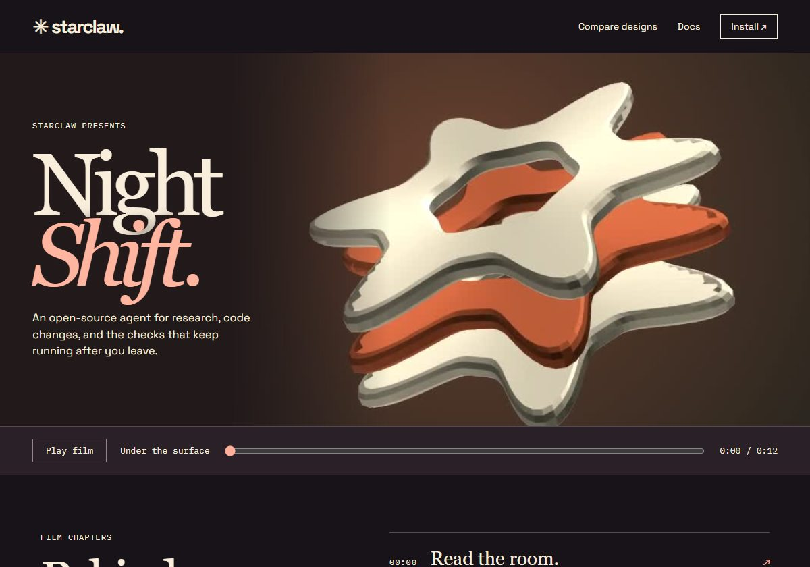
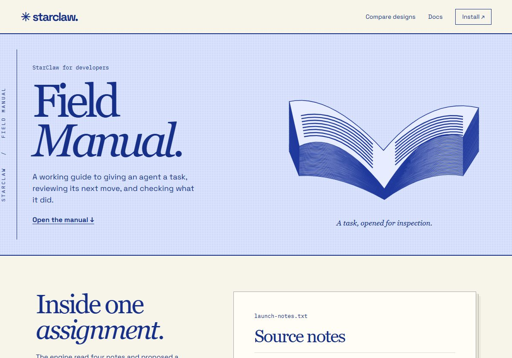
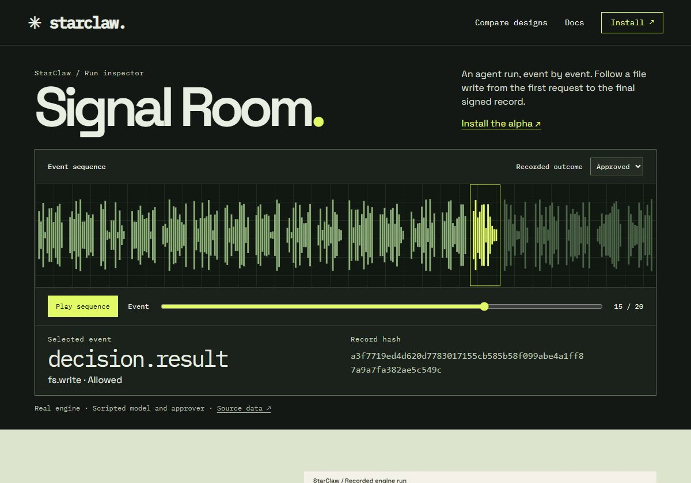

Three ways into StarClaw.
Watch a film, turn through a task, or explore its signed records.

Night Shift ↗
A film premiere. The moving sculpture sets the pace, and chapter controls let you cut between read, ask, and record.

Field Manual ↗
A blue-ink handbook. Open the source notes, turn to the proposed draft, and inspect the recorded decision.

Signal Room ↗
A working instrument. Scrub a fingerprint of the log, switch outcomes, and inspect the hash of each event.